Where are we so far?
- Introduction:
vignette("gc01_gcplyr") - Importing and reshaping data:
vignette("gc02_import_reshape") - Incorporating experimental designs:
vignette("gc03_incorporate_designs") - Pre-processing and plotting your data:
vignette("gc04_preprocess_plot") - Processing your data:
vignette("gc05_process") - Analyzing your data:
vignette("gc06_analyze") -
Dealing with noise:
vignette("gc07_noise") - Best practices and other tips:
vignette("gc08_conclusion") - Working with multiple plates:
vignette("gc09_multiple_plates") - Using make_design to generate experimental designs:
vignette("gc10_using_make_design")
So far, we’ve imported and transformed our measures, combined them with our design information, pre-processed, processed, plotted, and analyzed our data. Here, we’re going to learn potential strategies for dealing with noise in our growth curve data.
If you haven’t already, load the necessary packages.
library(gcplyr)
#> ##
#> ## gcplyr (Version 1.12.0, Build Date: 2025-07-28)
#> ## See http://github.com/mikeblazanin/gcplyr for additional documentation
#> ## Please cite software as:
#> ## Blazanin, Michael. gcplyr: an R package for microbial growth
#> ## curve data analysis. BMC Bioinformatics 25, 232 (2024).
#> ## https://doi.org/10.1186/s12859-024-05817-3
#> ##
library(dplyr)
#>
#> Attaching package: 'dplyr'
#> The following objects are masked from 'package:stats':
#>
#> filter, lag
#> The following objects are masked from 'package:base':
#>
#> intersect, setdiff, setequal, union
library(ggplot2)
library(tidyr)Introduction
Oftentimes, growth curve data produced by a plate reader will have
some noise in it. Since gcplyr does model-free analyses,
our approach can sometimes be sensitive to noise, necessitating steps to
reduce the effects of noise.
When assessing the effects of noise in our data, one of the first steps is simply to visualize our data, including both the raw data and any derivatives we’ll be analyzing. This is especially important because per-capita derivatives can be very sensitive to noise, especially when density is low. By visualizing our data, we can assess whether the noise we see is likely to throw off our analyses.
Broadly speaking, there are three strategies we can use to deal with noise.
- Excluding low-density data points
- Using fitting during derivative calculations
- Smoothing the raw data
Each approach is progressively more involved, so I recommend trying them out in that order. Typically, noise is most problematic in the derivatives, and all three approaches will help with that. However, if you’re dealing with substantial noise in your raw density data, only approach #3 will help.
Let’s start by pulling out some example data. The example data here is the same example data we’ve been working with, along with a version of that data with simulated noise added to it.
ex_dat_mrg <- make_example(vignette = 7, example = 1)
# Plot with a log y-axis
ggplot(data = dplyr::filter(ex_dat_mrg, noise == "Yes"),
aes(x = Time, y = Measurements)) +
geom_point() +
geom_line(data = dplyr::filter(ex_dat_mrg, noise == "No"),
lty = 2, color = "red") +
facet_wrap(~Well) +
scale_y_continuous(trans = "log10")
#> Warning in scale_y_continuous(trans = "log10"): log-10
#> transformation introduced infinite values.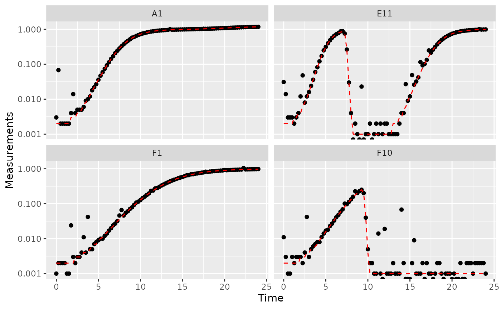
Great! Here we can see how the noisy (points) and noiseless (red line) data compare. We’ve plotted our data with log-transformed y-axes, which are useful because exponential growth is a straight line when plotted on a log scale. log axes also reveal another common pattern: random noise tends to have a much larger effect at low densities.
This level of noise doesn’t seem like it would mess up calculations of maximum density or area under the curve much, so that’s not enough of a reason to smooth. But let’s look at what our derivatives look like.
ex_dat_mrg <-
mutate(group_by(ex_dat_mrg, Well, Bacteria_strain, Phage, noise),
deriv_2 = calc_deriv(x = Time, y = Measurements),
derivpercap_2 = calc_deriv(x = Time, y = Measurements,
percapita = TRUE, blank = 0))
# Plot derivative
ggplot(data = dplyr::filter(ex_dat_mrg, noise == "Yes"),
aes(x = Time, y = deriv_2)) +
geom_point() +
geom_line(data = dplyr::filter(ex_dat_mrg, noise == "No"),
lty = 2, color = "red") +
facet_wrap(~Well, scales = "free_y")
#> Warning: Removed 4 rows containing missing values or values outside the scale range
#> (`geom_point()`).
#> Warning: Removed 1 row containing missing values or values outside the scale range
#> (`geom_line()`).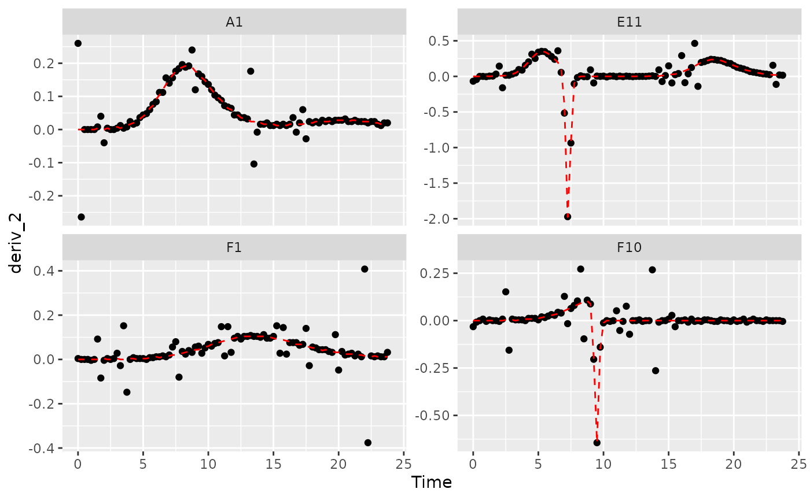
# Plot per-capita derivative
ggplot(data = dplyr::filter(ex_dat_mrg, noise == "Yes"),
aes(x = Time, y = derivpercap_2)) +
geom_point() +
geom_line(data = dplyr::filter(ex_dat_mrg, noise == "No"),
lty = 2, color = "red") +
facet_wrap(~Well, scales = "free_y")
#> Warning: Removed 8 rows containing missing values or values outside the scale range
#> (`geom_point()`).
#> Removed 1 row containing missing values or values outside the scale range
#> (`geom_line()`).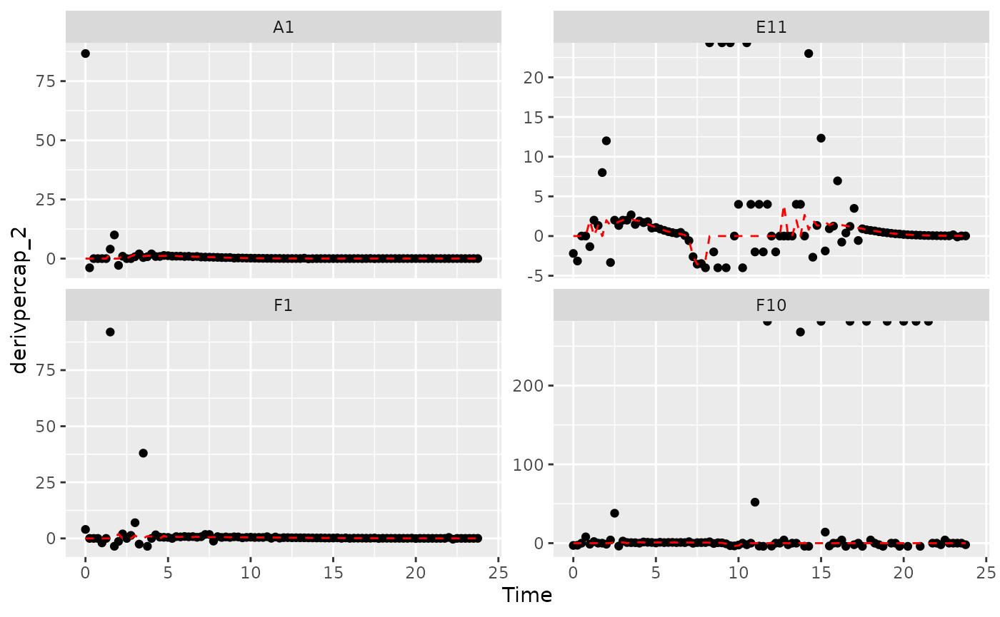
Those values are jumping all over the place! Let’s see what we can do to address this.
Summarizing on subsets of derivatives
One strategy we can employ when dealing with noisy data is excluding data points where the density is near 0. If we compare our per-capita growth rates and our density plots, we’ll see that most of the noise occurs when the density is very close to 0:
#Plot density
ggplot(data = dplyr::filter(ex_dat_mrg, noise == "Yes"),
aes(x = Time, y = Measurements)) +
geom_point() +
facet_wrap(~Well, scales = "free_y") +
scale_y_log10()
#> Warning in scale_y_log10(): log-10 transformation introduced
#> infinite values.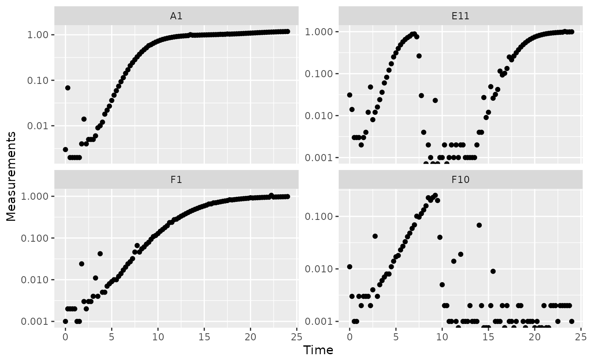
# Plot per-capita derivative
ggplot(data = dplyr::filter(ex_dat_mrg, noise == "Yes"),
aes(x = Time, y = derivpercap_2)) +
geom_point() +
facet_wrap(~Well, scales = "free_y")
#> Warning: Removed 8 rows containing missing values or values outside the scale range
#> (`geom_point()`).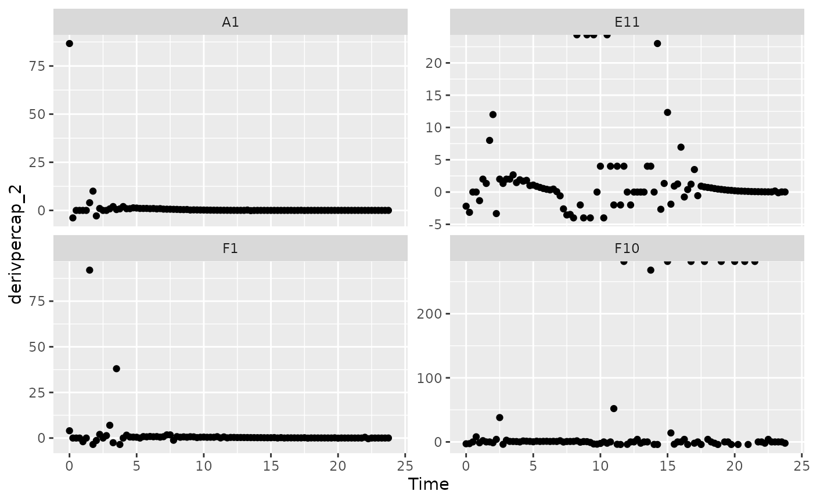
Per-capita growth rates are often very noisy when the density is close to 0, so it can make sense to simply exclude those data points.
#Plot density
ggplot(data = dplyr::filter(ex_dat_mrg, noise == "Yes", Measurements > 0.01),
aes(x = Time, y = Measurements)) +
geom_point() +
facet_wrap(~Well, scales = "free_y") +
geom_hline(yintercept = 0.01, lty = 2) +
scale_y_log10()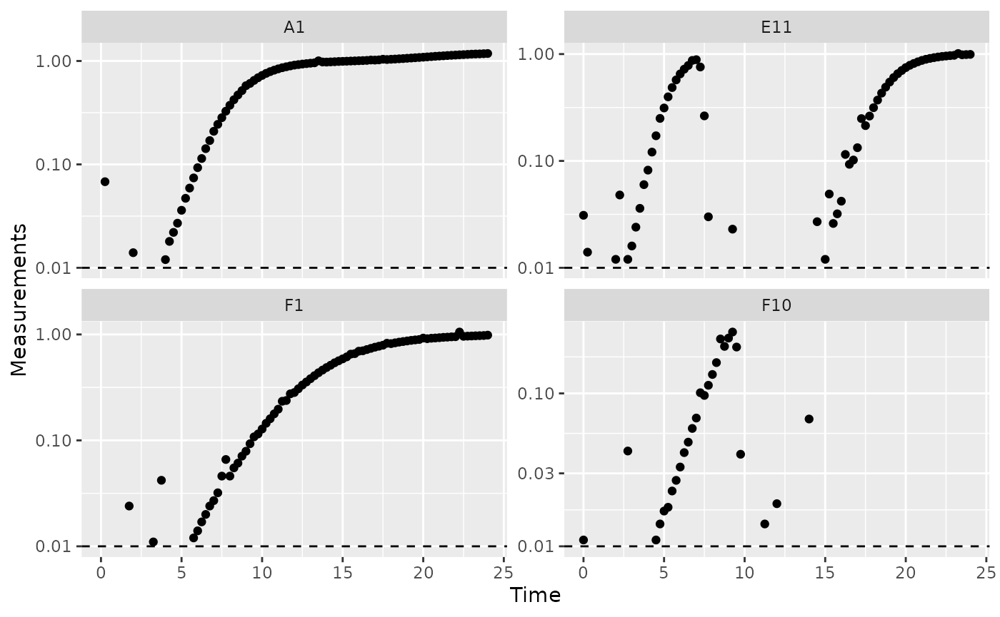
# Plot per-capita derivative
ggplot(data = dplyr::filter(ex_dat_mrg, noise == "Yes", Measurements > 0.01),
aes(x = Time, y = derivpercap_2)) +
geom_point() +
facet_wrap(~Well, scales = "free_y")
#> Warning: Removed 3 rows containing missing values or values outside the scale range
#> (`geom_point()`).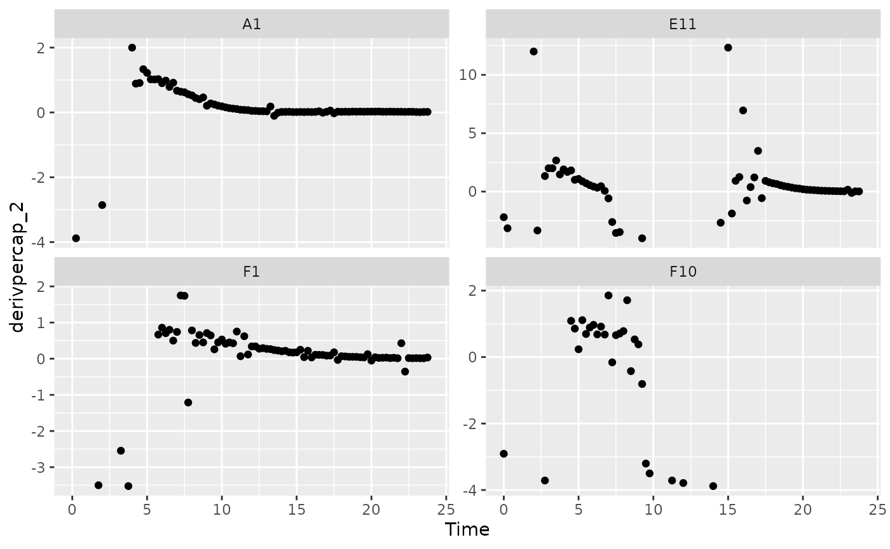
When we limit our analysis to data points where the density is not too close to 0, much of the noise in our per-capita derivative disappears.
To take this to the final step, we can use these cutoffs in our
summarize commands to calculate the maximum growth rate of
the bacteria when their density is at least 0.01.
ex_dat_mrg_sum <-
summarize(group_by(ex_dat_mrg, Well, Bacteria_strain, Phage, noise),
max_growth_rate = max(derivpercap_2[Measurements > 0.01],
na.rm = TRUE))
#> `summarise()` has grouped output by 'Well', 'Bacteria_strain', 'Phage'. You can
#> override using the `.groups` argument.
head(ex_dat_mrg_sum)
#> # A tibble: 6 × 5
#> # Groups: Well, Bacteria_strain, Phage [3]
#> Well Bacteria_strain Phage noise max_growth_rate
#> <fct> <chr> <chr> <chr> <dbl>
#> 1 A1 Strain 1 No Phage No 1.23
#> 2 A1 Strain 1 No Phage Yes 2
#> 3 E11 Strain 29 Phage Added No 2.11
#> 4 E11 Strain 29 Phage Added Yes 12.3
#> 5 F1 Strain 31 No Phage No 0.8
#> 6 F1 Strain 31 No Phage Yes 1.75Fitting during derivative calculation
The next approach to try is to calculate derivatives by fitting a
line to multiple points. (You might recall we previously used this in
the Calculating Derivatives article
vignette("gc05_process").)
To use the fitting functionality of calc_deriv, specify
the width of the moving window using window_width,
window_width_n, window_width_frac, or
window_width_n_frac. Wider windows will be more
smoothed.
Fitting using a moving window is subject to a trade off between the amount of variance (noise) that remains and the amount of bias added to your data. A small window will allow higher variance but add little bias, while a wide window will allow less variance but add more bias.
Thus, I recommend using as small a window as possible, like
window_width_n = 3 or window_width_n = 5. The
best way to figure out what values to use for your data are to try
different window widths and plot the results, then choose the smallest
one that is sufficient for your analyses to succeed.
ex_dat_mrg <-
mutate(group_by(ex_dat_mrg, Well, Bacteria_strain, Phage, noise),
deriv_5 = calc_deriv(x = Time, y = Measurements,
window_width_n = 5),
derivpercap_5 = calc_deriv(x = Time, y = Measurements,
percapita = TRUE, blank = 0,
window_width_n = 5),
deriv_9 = calc_deriv(x = Time, y = Measurements,
window_width_n = 9),
derivpercap_9 = calc_deriv(x = Time, y = Measurements,
percapita = TRUE, blank = 0,
window_width_n = 9))
#Reshape our data for plotting purposes
ex_dat_mrg_wide <-
pivot_longer(ex_dat_mrg, cols = starts_with("deriv"),
names_to = c("deriv", "window_width_n"), names_sep = "_")
ex_dat_mrg_wide <-
pivot_wider(ex_dat_mrg_wide, names_from = deriv, values_from = value)
#Plot derivative
ggplot(data = dplyr::filter(ex_dat_mrg_wide, noise == "Yes"),
aes(x = Time, y = deriv)) +
geom_line(aes(color = window_width_n), linewidth = 0.6) +
facet_wrap(~Well, scales = "free_y") +
geom_line(data = dplyr::filter(ex_dat_mrg_wide,
noise == "No", window_width_n == 2),
lty = 2, color = "red") +
scale_color_grey(start = 0.8, end = 0) +
theme_bw()
#> Warning: Removed 13 rows containing missing values or values outside the scale range
#> (`geom_line()`).
#> Warning: Removed 1 row containing missing values or values outside the scale range
#> (`geom_line()`).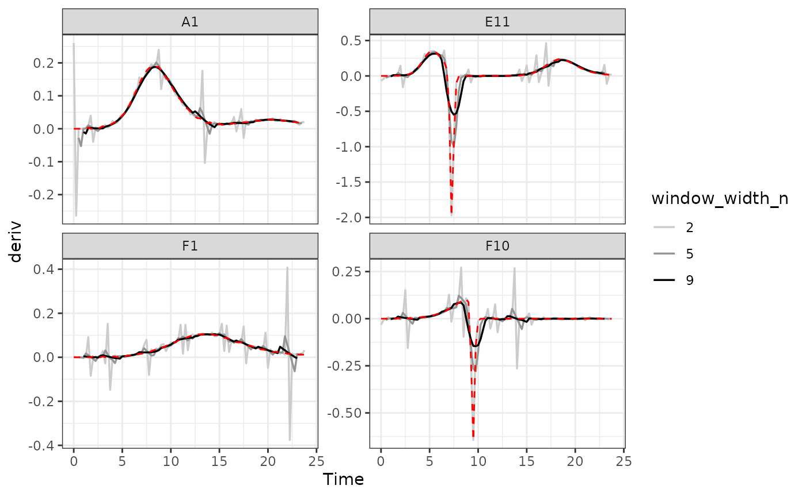
#Plot per-capita derivative
ggplot(data = dplyr::filter(ex_dat_mrg_wide, noise == "Yes"),
aes(x = Time, y = derivpercap)) +
geom_line(aes(color = window_width_n), linewidth = 0.6, alpha = 0.75) +
facet_wrap(~Well, scales = "free_y") +
geom_line(data = dplyr::filter(ex_dat_mrg_wide,
noise == "No", window_width_n == 5),
lty = 2, color = "red") +
scale_color_grey(start = 0.8, end = 0) +
ylim(NA, 5) +
theme_bw()
#> Warning: Removed 14 rows containing missing values or values outside the scale range
#> (`geom_line()`).
#> Warning: Removed 4 rows containing missing values or values outside the scale range
#> (`geom_line()`).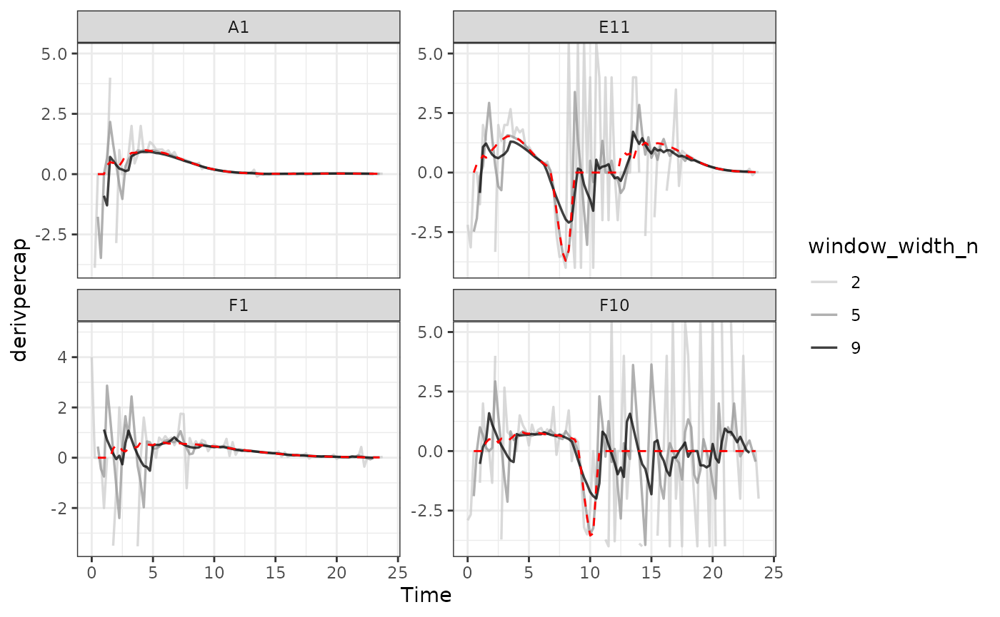
As we can see, increasing the width of the window reduces the effects
of noise, getting us closer to the noiseless data (red line). However,
it also starts making peaks shorter and valleys shallower. Finding the
right width that balances those two effects is the key to choosing the
right window_width.
Smoothing raw data
The final approach to dealing with noise is to smooth the raw density
data. gcplyr has a smooth_data function that
can carry out such smoothing. smooth_data has five
different smoothing algorithms to choose from:
moving-average, moving-median,
loess, gam, and
smooth.spline.
-
moving-averageandmoving-medianare simple smoothing algorithms that primarily act to reduce the effects of outliers on the data -
loess,gam, andsmooth.splineare spline-fitting approaches that use polynomial-like curves, which produces curves with smoothly changing derivatives, but can in some cases create curvature artifacts not present in the original data
Generally, I recommend sticking to the first two algorithms, alone or in combination, since the others tend to add artifacts to the derivatives of growth curve data.
Regardless of which smoothing algorithm you use, you will need to set a tuning parameter that controls how “smoothed” the data are. That choice is subject to a trade off between the amount of variance (noise) that remains and the amount of bias added to your data. Choosing a value that smooths your data less will allow higher variance but will add little bias to your data, while choosing a value that smooths your data more will allow less variance but add more bias to your data. Because of this, I generally recommend choosing the value that smooths your data as little as necessary for your analyses to work. For more details, see the Choosing tuning parameter values section.
Additionally, when sharing your findings, it’s important to be transparent by sharing the raw data and smoothing methods, rather than presenting the smoothed data as your source.
To use smooth_data, pass your x and y values, your
method of choice, and any additional arguments needed for the method. It
will return a vector of your smoothed y values.
Smoothing with moving-median
For moving-median, specify the width of the moving
window using window_width, window_width_n,
window_width_frac, or window_width_n_frac.
Wider windows will be more smoothed. Here, we’ll show moving medians
with windows that are 5 and 9 data points wide (movemed_1
is just our raw, unsmoothed data).
ex_dat_mrg <-
mutate(group_by(ex_dat_mrg, Well, Bacteria_strain, Phage, noise),
movmed_1 = Measurements,
movmed_5 =
smooth_data(x = Time, y = Measurements,
sm_method = "moving-median", window_width_n = 5),
movmed_9 =
smooth_data(x = Time, y = Measurements,
sm_method = "moving-median", window_width_n = 9))
#Reshape our data for plotting purposes
ex_dat_mrg_wide <-
pivot_longer(ex_dat_mrg, cols = starts_with("movmed"),
names_prefix = "movmed_", names_to = "window_width_n")
#Plot data
ggplot(data = dplyr::filter(ex_dat_mrg_wide, noise == "Yes"),
aes(x = Time, y = value)) +
geom_line(aes(color = window_width_n), linewidth = 0.6, alpha = 0.75) +
facet_wrap(~Well, scales = "free_y") +
geom_line(data = dplyr::filter(ex_dat_mrg_wide,
noise == "No", window_width_n == 1),
lty = 2, color = "red") +
scale_color_grey(start = 0.8, end = 0) +
scale_y_log10() +
ggtitle("moving-median") +
theme_bw()
#> Warning in scale_y_log10(): log-10 transformation introduced
#> infinite values.
#> Warning: Removed 12 rows containing missing values or values outside the scale range
#> (`geom_line()`).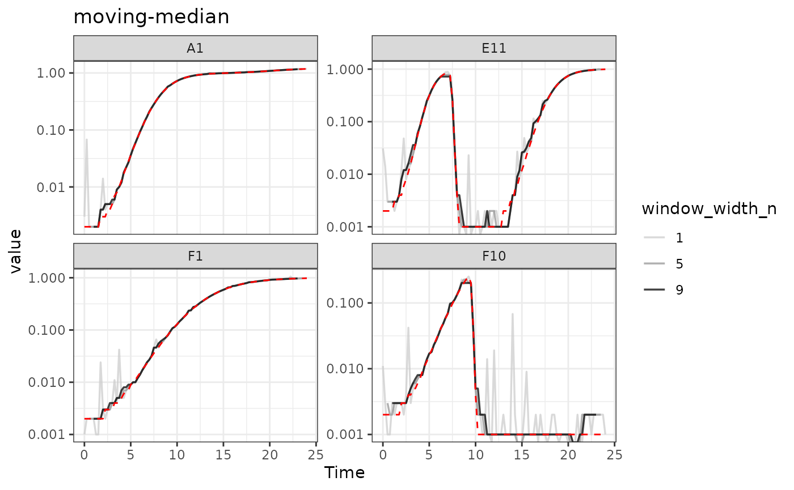
Here we can see that moving-median has done a great job
excluding noise without biasing our data very far from the true values
(red line). However, it has produced a smoothed density that is fairly
“jumpy”, something that is common with moving-median. To address this,
you often will need to combine moving-median with other
smoothing methods.
Smoothing with moving-average
For moving-average, specify the width of the moving
window using window_width, window_width_n,
window_width_frac, or window_width_n_frac.
Wider windows will be more smoothed. Here, we’ll show moving averages
with window_width_n values of 5 or 9 data points wide
(movavg_1 is just our raw, unsmoothed data).
ex_dat_mrg <-
mutate(group_by(ex_dat_mrg, Well, Bacteria_strain, Phage, noise),
movavg_1 = Measurements,
movavg_5 = smooth_data(x = Time, y = Measurements,
sm_method = "moving-average", window_width_n = 5),
movavg_9 = smooth_data(x = Time, y = Measurements,
sm_method = "moving-average", window_width_n = 9))
#Reshape our data for plotting purposes
ex_dat_mrg_wide <-
pivot_longer(ex_dat_mrg, cols = starts_with("movavg"),
names_prefix = "movavg_", names_to = "window_width_n")
#Plot data
ggplot(data = dplyr::filter(ex_dat_mrg_wide, noise == "Yes"),
aes(x = Time, y = value)) +
geom_line(aes(color = window_width_n), linewidth = 0.6, alpha = 0.75) +
facet_wrap(~Well, scales = "free_y") +
geom_line(data = dplyr::filter(ex_dat_mrg_wide,
noise == "No", window_width_n == 1),
lty = 2, color = "red") +
scale_color_grey(start = 0.8, end = 0) +
scale_y_log10() +
ggtitle("moving-average") +
theme_bw()
#> Warning in scale_y_log10(): log-10 transformation introduced
#> infinite values.
#> Warning: Removed 12 rows containing missing values or values outside the scale range
#> (`geom_line()`).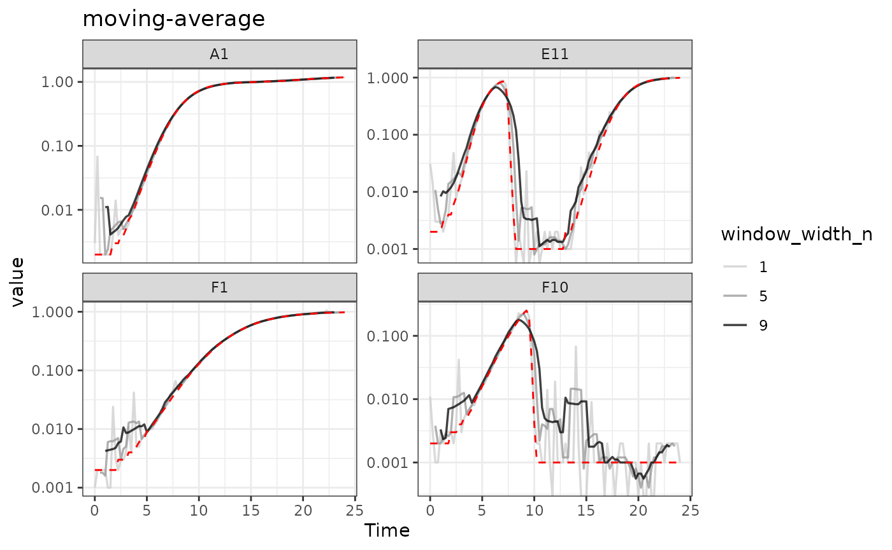
Here we can see that moving-average has helped reduce
the effects of some of that early noise. However, as the window width
gets larger, it starts biasing our data more strongly
[e.g. underrepresenting the maximum density peaks relative to the true
value (red line)].
Combining multiple smoothing methods
Often, combining multiple smoothing methods can provide improved
results. For instance, moving-median is particularly good
at removing outliers, but not very good at producing smoothly changing
data. In contrast, moving-average works well at producing
smoothly changing data, but isn’t as good at removing outliers. Often,
we can get the best of both by using moving-median first,
followed by moving-average:
ex_dat_mrg <-
mutate(group_by(ex_dat_mrg, Well, Bacteria_strain, Phage, noise),
smoothed_no = Measurements,
sm_med3 =
smooth_data(x = Time, y = Measurements,
sm_method = "moving-median", window_width_n = 3),
#Note that for the second round, we're using the
#first smoothing as the input y
smoothed_yes =
smooth_data(x = Time, y = sm_med3,
sm_method = "moving-average", window_width_n = 3))
#Reshape our data for plotting purposes
ex_dat_mrg_wide <-
pivot_longer(ex_dat_mrg, cols = starts_with("smoothed"),
names_to = "smoothed", names_prefix = "smoothed_")
#Plot data
ggplot(data = dplyr::filter(ex_dat_mrg_wide, noise == "Yes"),
aes(x = Time, y = value, color = smoothed)) +
geom_line(linewidth = 0.6, alpha = 0.75) +
scale_color_grey(start = 0.8, end = 0) +
facet_wrap(~Well, scales = "free_y") +
geom_line(data = dplyr::filter(ex_dat_mrg_wide,
noise == "No", smoothed == "no"),
lty = 2, color = "red") +
scale_y_log10() +
ggtitle("median then average smoothing") +
theme_bw()
#> Warning in scale_y_log10(): log-10 transformation introduced
#> infinite values.
#> Warning: Removed 4 rows containing missing values or values outside the scale range
#> (`geom_line()`).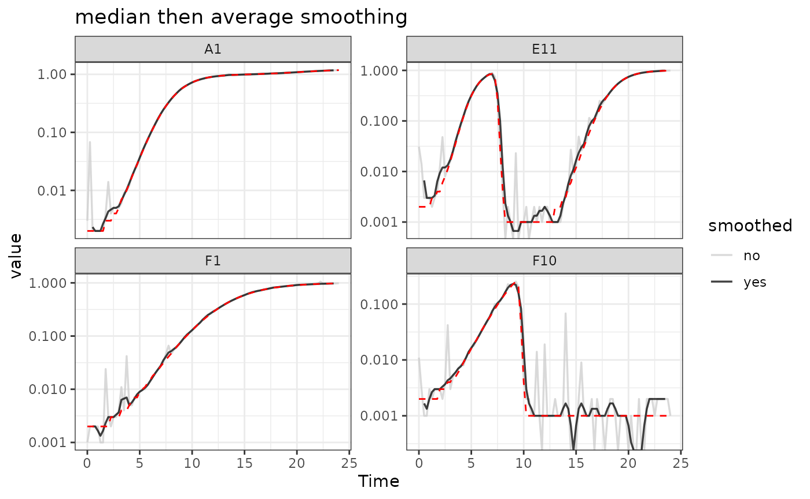
Here we can see that the combination of minimal
moving-median and moving-average smoothing has
produced a curve that has most of the noise removed with minimal
introduction of bias relative to the true values (red line).
Smoothing with other methods
I typically recommend against using other smoothing algorithms, since they have a tendency to add artifacts to the derivatives of growth curve data. However, they may work for your analyses, so if you are considering using them make sure to plot the smoothed output to check for any introduced artifacts.
For loess, the tuning parameter is the span
argument. loess works by doing fits on subset windows of
the data centered at each data point. span is the width of
the window, as a fraction of all data points. span values
typically are between 0 and 1, and larger values are more “smoothed”.
The fits can be linear (degree = 1) or polynomial
(typically degree = 2).
For gam, the primary tuning parameter is the
k argument. gam works by doing fits on subsets
of the data and linking these fits together. k determines
how many link points (“knots”) it can use. If not specified, the default
k value for smoothing a time series is 10, with smaller
values being more “smoothed”. However, unlike earlier methods,
k values that are too large are also problematic, as they
will tend to ‘overfit’ the data.
For smooth.spline, the primary tuning parameters are
df and spar. df is the number of
degrees of freedom, and must be between 1 and the number of unique x
values. spar is the smoothing parameter, and is typically
between 0 and 1.
Choosing tuning parameter values
Given that smoothing reduces the variance of your data but adds bias, how can you know the right value of the tuning ‘smoothness’ parameter for your data?
One way you can choose is by trying smoothing with different tuning parameter values, plotting the results, and then choosing the one that smooths your data as little as necessary for your analyses to work. This approach is especially useful if you’re trying to deal with noise that is most strongly affecting your derivatives.
An alternative way is to use cross-validation to attempt to estimate the best smoothing parameter value. Cross-validation works by randomly splitting the data into blocks of roughly equal size, leaving out one block and smoothing the data, then seeing how close the smoothed values are to the left-out data, reporting the average error across all the blocks. We can then repeat this whole process at different values of the smoothing parameter, testing which smoothing parameter value gives us the lowest error. Note, however, that this approach doesn’t quantify how well the smoothing improved your derivatives.
To do cross-validation of smoothing parameters, use
train_smooth_data. train_smooth_data works
similar to smooth_data, except that instead of returning
the smoothed data values, it returns the average accuracy metrics.
Because of this, we have to use train_smooth_data within
the dplyr function reframe, which works like
summarize except that it allows multiple rows to be
returned.
By default, train_smooth_data will test an evenly spaced
grid of three values of the smoothing parameter. Usually, that’s not
enough values, so you’ll want to set the number of values to test with
tuneLength (more values will take longer to calculate).
ex_dat_mrg_fortraining <- make_example(vignette = 7, example = 2)
training_results <-
reframe(group_by(ex_dat_mrg_fortraining, Bacteria_strain, Phage, Well),
train_smooth_data(x = Time, y = Measurements,
sm_method = "moving-average",
tuneLength = 5))
#> Loading required package: lattice
head(training_results)
#> # A tibble: 6 × 10
#> Bacteria_strain Phage Well window_width_n RMSE Rsquared MAE RMSESD
#> <chr> <chr> <fct> <dbl> <dbl> <dbl> <dbl> <dbl>
#> 1 Strain 1 No Phage A1 1 0.0104 0.999 0.00495 0.0138
#> 2 Strain 1 No Phage A1 3 0.00863 1.000 0.00484 0.00815
#> 3 Strain 1 No Phage A1 7 0.0106 1.000 0.00707 0.00749
#> 4 Strain 1 No Phage A1 9 0.0124 0.999 0.00860 0.00647
#> 5 Strain 1 No Phage A1 13 0.0179 0.999 0.0128 0.00626
#> 6 Strain 1 Phage A… A7 1 0.0242 0.886 0.0123 0.0351
#> # ℹ 2 more variables: RsquaredSD <dbl>, MAESD <dbl>We can see that train_smooth_data has given us a number
of accuracy metrics. The first one is ‘RMSE’, which stands for “root
mean squared error” and is often a good default value to use (where
lower values are better) to decide what the best parameter value is.
ggplot(data = training_results,
aes(x = window_width_n, y = RMSE)) +
geom_point()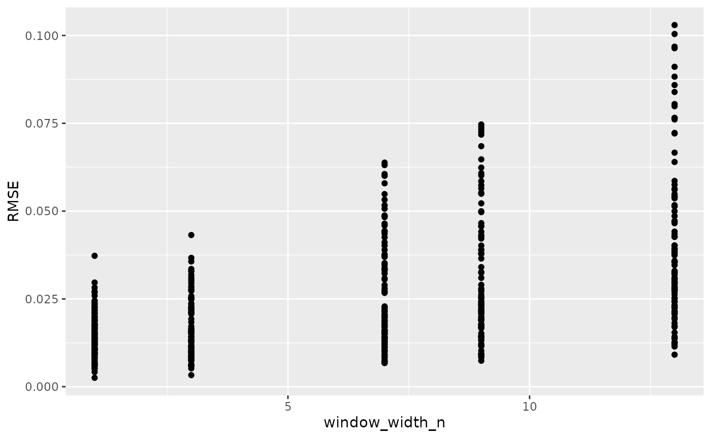
Based on this plot, a window_width_n of 1 has the lowest average error of all the values we tested.
However, often you’ll want to test different values from the defaults
in train_smooth_data. To do so, specify exactly what values
you want to test with the tuneGrid argument:
training_results <-
reframe(group_by(ex_dat_mrg_fortraining, Bacteria_strain, Phage, Well),
train_smooth_data(x = Time, y = Measurements,
sm_method = "moving-average",
tuneGrid = list(
"window_width_n" = c(1, 3, 5, 9, 13))))
ggplot(data = training_results,
aes(x = window_width_n, y = RMSE)) +
geom_point()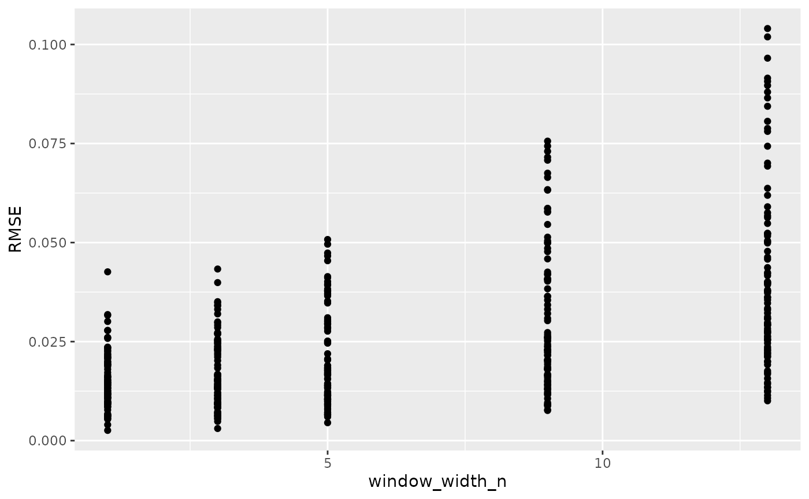
Here we can see for our example data that cross-validation suggests little smoothing is necessary. This makes sense, since our example data has noise that is most problematic for our derivatives, and cross-validation doesn’t consider the derivatives. For your data, I suggest combining cross-validation and manual observation of different smoothings to decide the best smoothing parameter value to use.
Calculating derivatives of smoothed data
Once you’ve smoothed your data, you can calculate derivatives using the smoothed data. Combining smoothing of raw data and fitting using multiple points for calculating derivatives can be a powerful combination for reducing the effects of noise while minimizing the introduction of bias.
# Note here that we're calculating derivatives of the smoothed column generated
# in the previous section by combining moving median and moving average smoothing
ex_dat_mrg <-
mutate(group_by(ex_dat_mrg, Well, Bacteria_strain, Phage, noise),
smderiv_0 = calc_deriv(x = Time, y = Measurements),
smderivpercap_0 = calc_deriv(x = Time, y = Measurements,
percapita = TRUE, blank = 0),
smderiv_3 = calc_deriv(x = Time, y = smoothed_yes, window_width_n = 3),
smderivpercap_3 = calc_deriv(x = Time, y = smoothed_yes, percapita = TRUE,
blank = 0, window_width_n = 3))
#Reshape our data for plotting purposes
ex_dat_mrg_wide <-
pivot_longer(ex_dat_mrg, cols = starts_with("smderiv"),
names_to = c("deriv", "window_width_n"), names_sep = "_")
ex_dat_mrg_wide <-
pivot_wider(ex_dat_mrg_wide, names_from = deriv, values_from = value)
#Plot derivative
ggplot(data = dplyr::filter(ex_dat_mrg_wide, noise == "Yes"),
aes(x = Time, y = smderiv, color = window_width_n)) +
geom_line(linewidth = 0.6, alpha = 0.75) +
scale_color_grey(start = 0.8, end = 0) +
facet_wrap(~Well, scales = "free_y") +
geom_line(data = dplyr::filter(ex_dat_mrg_wide,
noise == "No", window_width_n == 0),
lty = 2, color = "red") +
theme_bw()
#> Warning: Removed 7 rows containing missing values or values outside the scale range
#> (`geom_line()`).
#> Warning: Removed 1 row containing missing values or values outside the scale range
#> (`geom_line()`).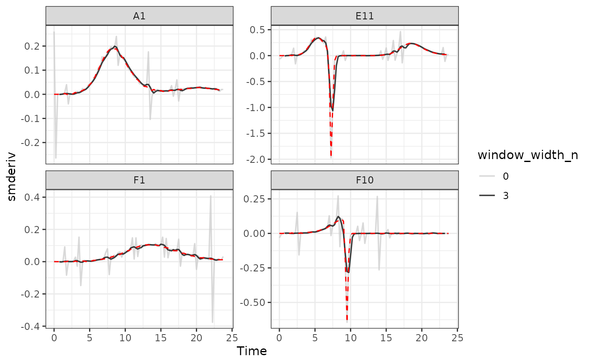
#Plot per-capita derivative
ggplot(data = dplyr::filter(ex_dat_mrg_wide, noise == "Yes"),
aes(x = Time, y = smderivpercap, color = window_width_n)) +
geom_line(linewidth = 0.6, alpha = 0.75) +
scale_color_grey(start = 0.8, end = 0) +
facet_wrap(~Well, scales = "free_y") +
geom_line(data = dplyr::filter(ex_dat_mrg_wide,
noise == "No", window_width_n == 3),
lty = 2, color = "red") +
ylim(NA, 5) +
theme_bw()
#> Warning: Removed 8 rows containing missing values or values outside the scale range
#> (`geom_line()`).
#> Warning: Removed 6 rows containing missing values or values outside the scale range
#> (`geom_line()`).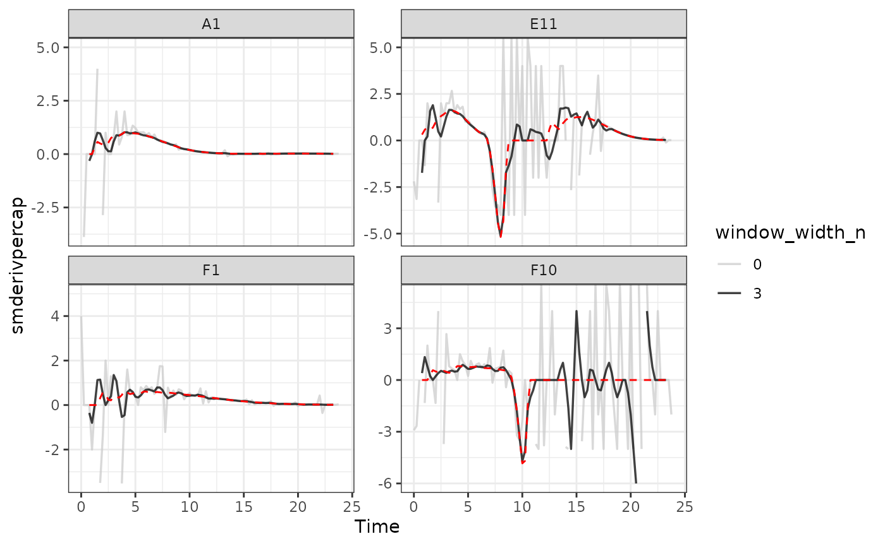
Here we can see that calculating derivatives from smoothed raw data can be a powerfully useful combination.
What’s next?
Now that you’ve analyzed your data and dealt with any noise, there’s just some concluding notes on best practices for running statistics, merging growth curve analyses with other data, and additional resources for analyzing growth curves.
- Introduction:
vignette("gc01_gcplyr") - Importing and reshaping data:
vignette("gc02_import_reshape") - Incorporating experimental designs:
vignette("gc03_incorporate_designs") - Pre-processing and plotting your data:
vignette("gc04_preprocess_plot") - Processing your data:
vignette("gc05_process") - Analyzing your data:
vignette("gc06_analyze") - Dealing with noise:
vignette("gc07_noise") -
Best practices and other tips:
vignette("gc08_conclusion") - Working with multiple plates:
vignette("gc09_multiple_plates") - Using make_design to generate experimental designs:
vignette("gc10_using_make_design")